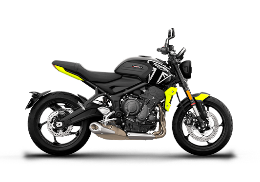
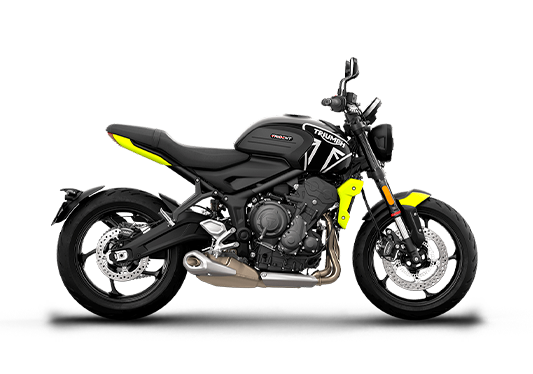
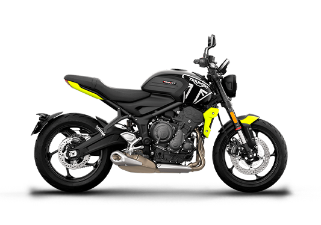
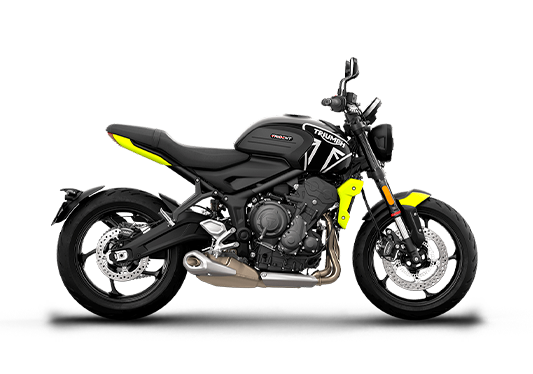

 

Descubra a emoção pura de pilotar a Triumph Trident 660, a roadster que redefiniu o equilíbrio perfeito entre desempenho, estilo e tecnologia. Agora você tem a chance exclusiva de sentir na prática tudo o que torna essa máquina única e participar do nosso programa oficial de Test Rider.
Basta preencher o formulário com seus dados e aguardar nossa confirmação por e-mail. Os selecionados serão convidados para uma experiência completa, acompanhada por especialistas Triumph, em um ambiente seguro e preparado para extrair o melhor da Trident 660.